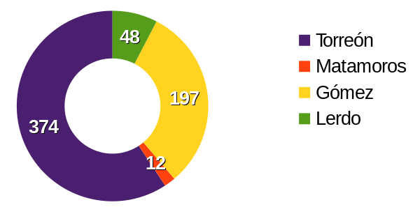
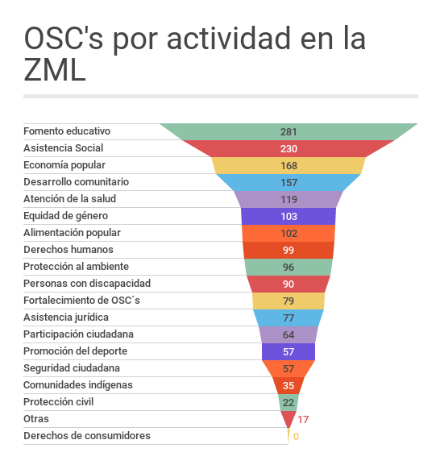
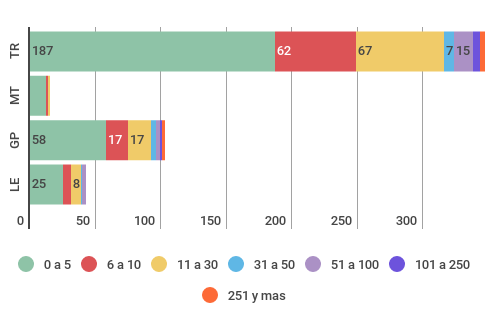

Para el sociólogo Amitai Etzioni, solo hay camino hacia una buena sociedad con tres pilares equilibrados: el mercado, el gobierno, y las organizaciones sociales y comunitarias. Para él, muchas de las problemáticas de nuestro tiempo provienen de que se deja nuestro destino en manos solo del mercado y el estado, polos en tensión que requieren de una comunidad participativa para equilibrar.
La sociedad civil tiene muchas manifestaciones, nos centraremos aquí en las asociaciones civiles de Torreón y la zona metropolitana, sus ámbitos de acción, el numero de colabores y su impacto económico.
¿Cuantas son?
Como referencia,** en Estados Unidos existen 651 Organizaciones de la Sociedad Civil (OSC's) por cada 100 mil habitantes.** En Chile, país con más organizaciones de América Latina la proporción es de 638 por cada cien mil habitantes. En México en cambio, según el Registro Federal de las Organizaciones de la Sociedad Civil, hay en México 34,474 organizaciones de la sociedad civil, equivalentes a 29 por cada 100 mil habitantes. En la Zona Metropolitana de la Laguna es de 49, casi el doble. Y es que en Torreón se registran 374 Organizaciones de la Sociedad Civil, y 631 en la Zona Metropolitana. Una proporción superior a ciudades comparables como Saltillo, Chihuahua, Hermosillo, Aguascalientes, Querétaro o León.
OSC's por municipio en la ZML

¿Cómo impacta en una ciudad esta alta proporción de organizaciones?
En casi cada ámbito de Torreón y La Laguna hay organizaciones sin fines de lucro buscando incidir positivamente, sea en la cultura, los deportes, una profesión, una colonia y una gran variedad de actividades que el INDESOL clasifica en 19 posibles objetos sociales. A nivel nacional el objeto social más común en las organizaciones es el fomento educativo con un 43 %, y en la ZML es el 48 % de las organizaciones dedicadas a este fin, muchas de ellas escuelas privadas con una misión social definida y que de esta manera aportan a nuestra sociedad. Tanto en México como en La Laguna la segunda actividad más común es la asistencia social, pero mientras en el país son un 31 %, en nuestra ciudad son el 42 %, entre albergues, fundaciones, centros comunitarios y muy diversos conceptos de atención a grupos vulnerables.
Otro importante número de organizaciones se enfocan en favorecer la economía popular (26 %) y el desarrollo comunitario (24 %). El apoyo a la alimentación popular, la asistencia jurídica, la asistencia a comunidades indígenas, la promoción de la equidad de género, el desarrollo de las personas con discapacidad, la promoción y defensa de los derechos humanos, el estímulo al deporte, la atención de la salud y la protección al ambiente, son otros ámbitos de impacto de el trabajo de miles de personas a través de estas más de seiscientas organizaciones.
Hay dos rubros más, de especial relevancia en nuestra región por su crecimiento, las organizaciones enfocadas a la participación ciudadana en asuntos públicos, y aquellas orientadas al fortalecimiento del tejido social y la seguridad ciudadana. Aun lejos del 13 % que representan los organismos que promueven la participación ciudadana a nivel nacional, en la ZML representan el 10 % sin embargo, apenas en 2014 era sólo un 8%. Lo mismo ocurre con las asociaciones promotoras de la seguridad ciudadana que pasaron en dos años de 7 a 9%, pero en este caso muy por encima del 6 % que representan en el ámbito nacional.
OSC's por actividad en la ZML

¿Que valor generan?
A su vez los Censos Económicos nos muestran que en la ZML las OSCś generan un total de 4,018 empleos y más de 16 mil si consideramos también la educación privada. Los servicios prestados por instituciones de asistencia social, asociaciones, albergues y organizaciones representan en producción 337 millones de pesos al año, 200 millones de los cuales son considerados valor agregado. Si sumamos el sector de educación privada también considerada actividad de la sociedad civil, la producción anual alcanza los 2,100 millones de pesos anuales con 1,300 millones de valor agregado representando mas del 1 % de la producción bruta total de nuestra ciudad.
OSC's por municipio y rango de empleados de acuerdo al DENUE.

Derrama económica de las OSC's
| Municipio | Unidades económicas | Personal ocupado | Producción bruta total (millones de pesos) | Valor agregado (millones de pesos) |
|---|---|---|---|---|
| Matamoros | 46 | 228 | 7.319 | 5.301 |
| Torreón | 807 | 12,108 | 1,821.145 | 1,146.880 |
| Gómez Palacio | 256 | 3,284 | 304.684 | 203.435 |
| Lerdo | 79 | 844 | 58.605 | 37.246 |
| ZML | 1,188 | 16,464 | 2,191.753 | 1,392.862 |
Fuentes
- Registro Federal de Organizaciones de la Sociedad Civil.
- Directorio Estadístico Nacional de Unidades Económicas (DENUE). INEGI.
- Censos Económicos 2014. INEGI.
Este análisis fue publicado en Milenio Laguna
La Laguna y la Sociedad Civil. Valor y aportación de la participación ciudadana.